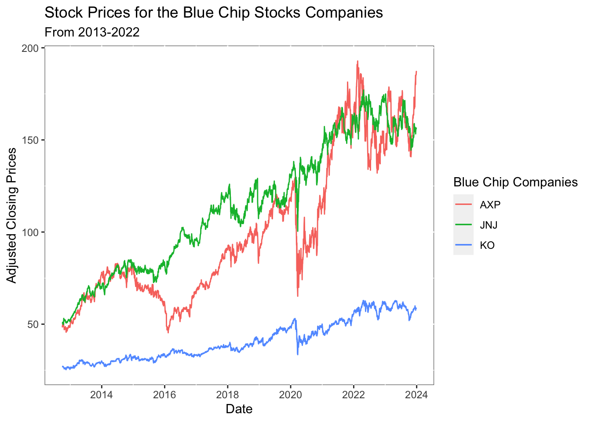

The following graph shows overall trends in American Express, Coca Cola and Johnson & Johnshon stock prices.
Code
options("getSymbols.warning4.0"=FALSE)options("getSymbols.yahoo.warning"=FALSE)tickers =c("AXP","KO","JNJ" )for (i in tickers){getSymbols(i,from ="2012-10-01",to ="2024-01-01")}x <-list(title ="date")y <-list(title ="value")stock <-data.frame(AXP$AXP.Adjusted, KO$KO.Adjusted, JNJ$JNJ.Adjusted)stock <-data.frame(stock,rownames(stock))colnames(stock) <-append(tickers,'Dates')stock$date<-as.Date(stock$Dates,"%Y-%m-%d")#head(stock)################################################ggplot(stock, aes(x=date)) +geom_line(aes(y=AXP, colour="AXP"))+geom_line(aes(y=JNJ, colour="JNJ"))+geom_line(aes(y=KO, colour="KO"))+labs(title ="Stock Prices for the Blue Chip Stocks Companies",subtitle ="From 2013-2022",x ="Date",y ="Adjusted Closing Prices")+theme(panel.background =element_rect(fill ="white", colour ="grey50"))+guides(colour=guide_legend(title="Blue Chip Companies"))

Since the plots above show prices rather than percentage change, we can see the stocks’ starting point is different. Regardless, we can see that the Coca-Cola stock has lagged behind American Express and Jonhson and Jonhson, who have had much stronger movements in the past decade, while Coca-Cola has remained relatively flat.
The candlestick plot shows us that over the last 30 days, the price of the Ripple token in relation to the USD has fluctuated plenty. During the period, it reached a high of almost $0.66 but then dipped significantly to less than $0.54 and is now oscillating around the $0.58 mark. Nonetheless, for few weeks, regardless of the waving, the price seems to be trending up.
Hover over the plot to see the difference.
Code
# bring in dataeconomic_data <-read.csv("../../data/fred_data_lab0/economic_data.csv")economic_data$date <-as.Date(economic_data$date, format="%d/%m/%Y")g4 <-ggplot(economic_data, aes(x=date)) +geom_line(aes(y=cpi, colour="CPI"), size=1) +geom_line(aes(y=gdp, colour="GDP"), size=1) +# formatscale_colour_manual(values =c("CPI"="red", "GDP"="blue")) +labs(title ="CPI and GDP Over Time",x ="Date",y ="Value in Percentage") +guides(colour=guide_legend(title="Indicators"))# plotggplotly(g4) %>%layout(hovermode ="x")
This plot shows the time series of both GDP, which measures economic growth, and CPI, which measures inflation. Both are shown as quarterly variations from the previous reading of the metric, and the data was obtained from the St. Louis Fed website. The data is shown quarterly from early 2014 to just before the beginning of the COVID-19 pandemic in 2020. We can see that over that period, growth in the US remained strong, being almost consistently above 2%, while inflation was consistently low.